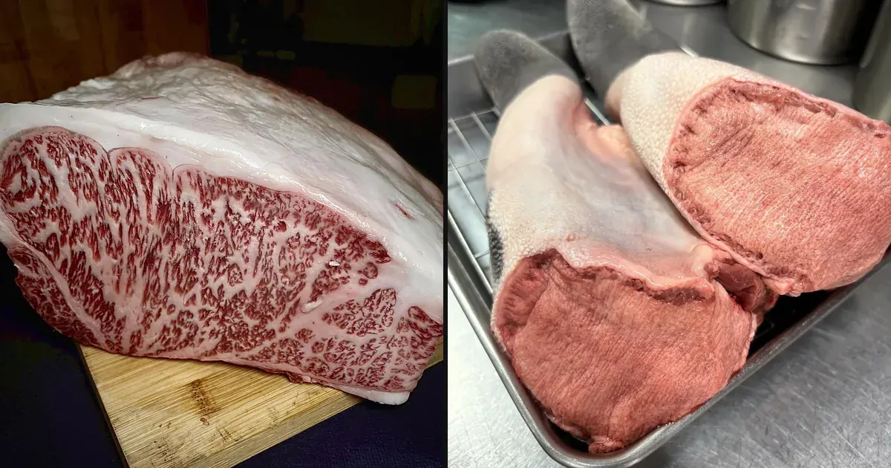
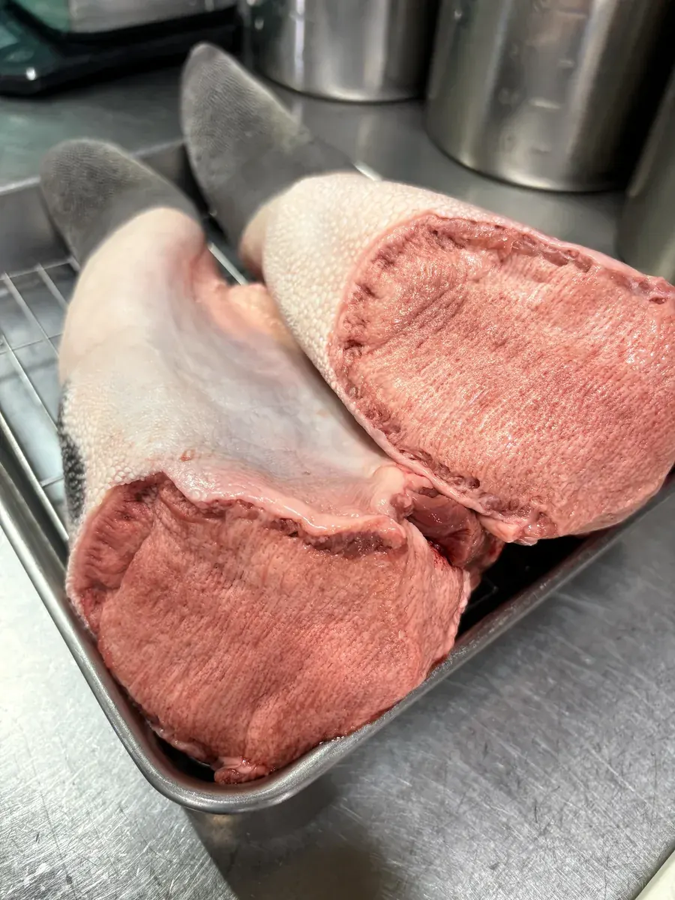

OUR WAGYU · November 2026
Two wagyu brands, each at its best

At Yakiniku Tono we serve two famous wagyu brands: Matsusaka beef from our home prefecture of Mie, and Hida beef from neighboring Gifu. We do not try to serve every cut of both. We serve each brand in the cuts where it is truly at its best — Matsusaka beef as A5 sirloin, and Hida beef as fresh outside skirt, hanging tender and tongue.
Matsusaka beef: the sweetness of the fat
Matsusaka beef is one of Japan’s best-known wagyu brands, raised in Mie Prefecture. Only Japanese Black heifers — females that have never had a calf — can be called Matsusaka beef.
What makes Matsusaka beef special is the sweetness of its fat. It melts as soon as it touches your tongue and leaves a sweet aroma. That character shows best in a well-marbled sirloin, so this is the cut we serve.
All of our Matsusaka beef comes from one farm: Mr. Sakakura in Iitaka, Matsusaka, who raises his heifers slowly for about 650 days. Each animal comes with its own Matsusaka beef certificate. Working with one trusted farm lets us serve the same high quality every time. We buy it as a block and cut it in our kitchen.

Hida beef: skirt and tongue, where freshness is everything
Outside skirt (harami), hanging tender (sagari) and tongue look like ordinary meat on the grill, but they are actually offal cuts. With offal, freshness changes the taste more than anything else.
We buy these Hida beef cuts directly from a processor in Hida-Takayama, and they arrive at our restaurant the day after processing. That freshness is hard to find elsewhere. It is why our skirt stays tender and full of flavor even when we cut it thick.
Our Hida Beef Outside Skirt is the dish guests order most at Yakiniku Tono — and the reason is simple: taste and quality. If it is your first visit, start here. For tongue, try the Hida Beef Tongue Platter, which brings together different cuts from across the tongue, or the thick-cut tongue.

Enjoy both in one meal
On a special night, order both: the sweet fat of Matsusaka sirloin and the fresh, rich flavor of Hida skirt. Two different kinds of wagyu, side by side.
The easiest way is our 5-Cut Platter (410g, for 2–3 people): Matsusaka beef sirloin, Hida beef outside skirt, Hida beef hanging tender, wagyu top round and premium wagyu short rib.
Beyond these two brands, more than ten items on our menu are wagyu, carefully chosen and mostly A5 grade. Whichever cut you pick, it should be worth the trip.

Visiting Yakiniku Tono
We are in Nagashima, Kuwana — 2 minutes by car from Nabana no Sato and about 15 minutes from Nagashima Spa Land and Jazz Dream Nagashima.
- 50 seats, with a private room and tatami seating — children are very welcome
- Order on a tablet: menu in English and Chinese, with photos
- Credit cards, PayPay, WeChat Pay and Alipay
- Free Wi-Fi, and parking on site (room for tour buses)
- Dinner daily 17:00–23:00 (last order 22:00) · Lunch Sat, Sun & holidays 11:30–14:00 (last order 13:30) · Closed Wednesdays
We recommend booking ahead. You can send a request with our online form (you may write in English). Same-day bookings are by phone only: +81-594-42-2939.